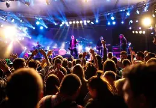
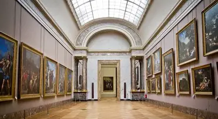

Tour Eiffel
CultureRencontres et balades au pied de la dame de fer.
~5 kmLieuxProche est votre assistant pour découvrir les lieux et événements intéressants près de chez vous. En quelques informations simples sur vos préférences et votre localisation, la plateforme vous recommande des endroits adaptés à votre profil : lieux de culture, événements sociaux, espaces de loisir, etc.
Remplissez le formulaire ci-dessous pour démarrer et découvrir ce qui vous attend près de vous !
Aucun favori - cliquez ❤️ sur un lieu pour l'ajouter.
Rencontres et balades au pied de la dame de fer.
~5 km
Partagez une soirée, échangez vos playlists et vos coups de coeur live.
~3 km
Rencontres culturelles et visites commentées improvisées.
~4 kmPromenades au calme, lecture et rencontres dans un cadre verdoyant.
~6 kmPetits brunchs et discussions autour d'un bon café.
~2 kmVivez les matchs ensemble et partagez la passion du sport.
~8 kmAucun profil enregistré.